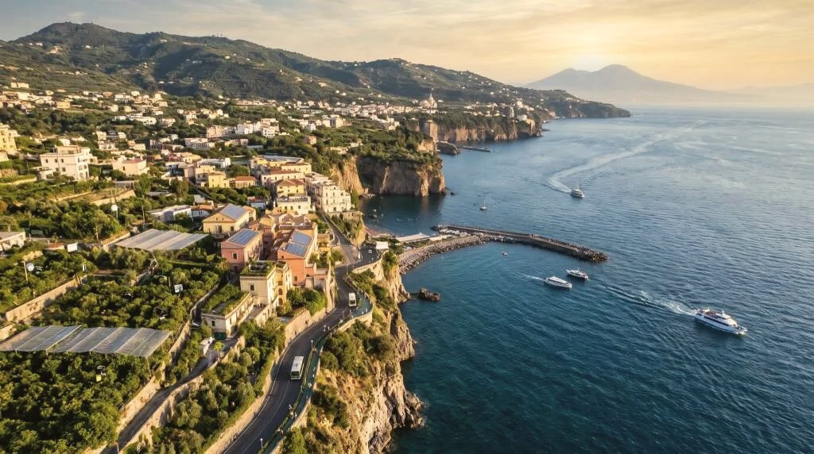
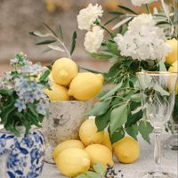

Notes from
the venues.
Places we know well, and what we have learned marrying couples in them.
Amalfi Coast Wedding Planner
Lately
New from the journal.


 Caruso Belmond HotelAmalfi Coast17 November 2025
Caruso Belmond HotelAmalfi Coast17 November 2025 How to choose your Italian vendor team: a planner’s honest playbook10 October 2025
How to choose your Italian vendor team: a planner’s honest playbook10 October 2025
Mediterranean maximalism: from citrus hues to pattern-play tables10 October 2025 The Italian welcome party: turning arrival day into la dolce vita10 October 2025
The Italian welcome party: turning arrival day into la dolce vita10 October 2025 The Italian wedding feast: from aperitivo teatrale to late-night street food10 October 2025
The Italian wedding feast: from aperitivo teatrale to late-night street food10 October 2025- Amalfi Coast vs. Cinque Terre: two coastlines walk into your moodboardAmalfi Coast10 October 2025